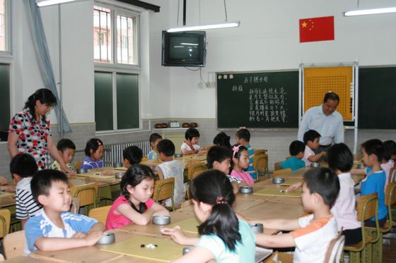

五子文化与知识(三)：五子竞技 重返故乡
#1 五子文化与知识(三)：五子竞技 重返故乡 作者：刺青 发表时间：2010-2-28 13:10:04
中国棋院在线讯 《五子棋知识》第三章主要讲述了五子棋二十年前重返中国后经过一系列普及开展工作，项目得到了迅猛发展，详见如下内容。
三、五子竞技 重返故乡
五子棋起源于中国，发展于日本，后来，风靡欧洲，周游世界之后，二十年前重返故乡——中国。不过，这次回归故乡的五子棋，已不是原本的单纯休闲游戏，而更具有了竞技体育的色彩。
根在中国的五子棋，重返故乡后发展势头迅猛。在有关机构的关心、指导下，经众多五子棋爱好者的不懈努力和推动，五子棋从20世纪90年代起，在中国蓬蓬勃勃地发展起来。
北京作为中国的首都，是五子棋发展最早，也是最普及的地区。1990年，由那威和十几名五子棋爱好者共同发起并成立了第一个五子棋的民间组织——京都五子棋社，并逐步得到扩展。京都五子棋社和日本、瑞典等国五子棋爱好者进行了多次的友好交流，并几次选派棋手参加世界连珠锦标赛。在北京带动下，我国很多地区也先后成立了五子棋组织，如：天津市、河北廊坊市、文安县、黑龙江大庆市、河北秦皇岛市、上海市、江苏镇江、河北石家庄、沧州、云南、浙江、辽宁、吉林、安徽等，这些组织在各地开展了形式多样的五子棋活动。
1996年，中央电视台(CCTV-5)开播了《黑白世界•五子棋讲座》，那威、彭建国等教师对竞技五子棋进行了深入浅出的讲解，大大推进了五子棋家喻户晓的进程。
20世纪90年代，竞技五子棋初回故里，之后的十几年，是我国五子棋迅速普及的十几年。五子棋爱好者群体不断扩大，水平不断提高，地区间的交流活动逐步增加，各地五子棋组织应运而生，五子棋比赛和活动蓬勃开展起来。首都北京每年春节期间的龙潭庙会，五子棋活动丰富多彩，盛况空前，其五子棋活动区已经成为了每年全国五子棋爱好者欢聚和交流的不可多得的场所。青少年下五子棋的人多起来，中老年人茶余饭后下五子棋人数也在不断扩展。用棋盘下五子棋的人很多，网络上下五子棋的人数也不比其他棋种逊色。
最可喜的是五子棋向社会普及。占最重要方面的千百万大、中、小学生都来学下五子棋了，我国进行的教育改革，十分重视和强调学生的素质教育，而五子棋本身具有良好的素质教育功能。五子棋进学校、进课堂其意义远远超出了五子棋事业本身。以北京为例，春江小学、崇文区少年宫、西城区少年宫、茶食小学、宣武区回民中学、崇文区回民小学、西藏中学等中小学相继开办了五子棋培训班，下五子棋的中小学生人数与日俱增。宣武区香厂路小学和崇文区光明小学从1999年开始至今，一直把五子棋定为校本课程(我国教育改革后的课程机构有国家课程、地方课程与校本课程三种类型组成)，把五子棋课排进学校一些年级正式课程表中，学校自编教材，多次举办校内五子棋比赛，课堂内外下五子棋已成为这两所学校的特色之一。走进北京一些小学进行采访调查，新入学的一年级新生自认为会下棋的孩童中有一半以上自称会下五子棋，下过五子棋，喜欢下五子棋。让学生选项学棋，会有一半以上学生愿意先学五子棋。小学高年级棋课，课上余10分钟自由选项下棋，下五子棋的学生不会少于50%。北京高校五子棋联赛也始于这个时期，近十年来，北京高校，甚至河北一些高校的学生抱着极大的热情纷纷参加每年一届的北京高校联赛和个人精英赛，北京高校的五子棋比赛的蓬勃发展对促进全国高校的五子棋发展起到了很大的推进作用。

图3：北京市宣武区香厂路小学学生在下五子棋
［ 有志青年 于 2010-2-28 18:27:13 时奖励此帖[金币加 20 威望加1］